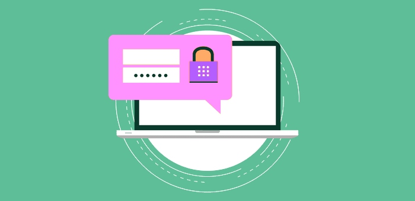

Almost everyone with an email account has experienced phishing at some point. You may have even fallen for it yourself. Phishing is a type of online scam where criminals pose as a legitimate company or person in order to trick you into giving them sensitive information, such as your login credentials or financial information. Office 365 Phishing Protection is a feature that can help protect you and your organization from these types of attacks. It uses machine learning and other sophisticated techniques to identify and block phishing emails. In this blog post, we'll take a closer look at how Office 365 Phishing Protection works and how you can configure it to best protect your organization.

Phishing is one of the most common causes of healthcare data breaches because of compromised email accounts exposed by the Office for Civil Rights to increasing frequency. Phishing is how most cyberattacks begin, as it features perpetrators with a way into healthcare networks for more extensive intrusions. Office 365 accounts contain a wealth of valuable information. Phishing emails were responsible for some of the world's largest data breaches in the healthcare industry. Anthem Inc and Premera Blue Cross were affected by large-scale breaches relating to healthcare data in 2015.
Hacker sophistication has increased in light of the Anti-Phishing Working Group and 90,000 phishing campaigns are stopped each month. In addition to improving in number, Phishing threats are becoming more targeted. It is essential for cybersecurity solutions that are effective at detecting and blocking sophisticated threats, such as targeted phishing attacks, email impersonation attacks, and advanced persistent threats, to be deployed. Office 365's Exchange Online Protection service does not sufficiently address the specialized threats that these strategies pose.
Microsoft Office 365's basic security features are insufficient to protect against zero-day malware and phishing threats. Malware is now heavily obfuscated and new variants are constantly being developed. Signature-based detection mechanisms, such as antivirus engines, are incapable of detecting and blocking these attacks. Reinforcement learning methods must be implemented to improve safety, including sandboxing. Attachments that do not pass the test are deposited into the sandbox for further investigation. Standard Office 365 protection mechanisms don't incorporate this attribute.
Phishing often involves spoofing, where trusted contacts and businesses are impersonated. Email security solutions should be implemented that have anti-spoofing capabilities, such as SPF, DKIM, DMARC, and use DNS authentication services. Outbound scanning is important for data loss prevention and to identify compromised mailboxes, such as those used to send phishing emails into it.
Phishing emails often contain embedded URLs that direct the receiver to a website hosting malware or phishing forms, so link scanning is important to ensure that emails that contain links to malicious websites are blocked at the gateway and are withheld.
Healthcare organizations can take steps to reduce the likelihood of phishing attacks succeeding. One important measure to implement is multifactor authentication for email accounts. If an employee responds to a phishing email and discloses their credentials, only one form of authentication can prevent an attacker from accessing the employee's email account. Multi-factor authentication requires an additional authentication method before granting access to an email account. According to Microsoft, multi factor authentication will prevent cyber thefts.
Technical defenses are needed to block signs and thwart them from reaching users inboxes, but even when layered with defenses against phishing, some threats will still get through. All it takes is for one person to respond to a phishing email and divulge their credentials for a costly data breach to occur.
It is crucial to ensure that the workforce is provided with security awareness training, that the risk of phishing attacks is understood, and all members of the workforce are taught how to recognize and avoid phishing attacks. Security awareness training has been shown to reduce susceptibility to phishing attacks.
In conclusion, phishing attacks have evolved to include social media, email and even text messages. As attacks shift to mobile devices, it's more important than ever for employees to be vigilant and exercise caution when sharing information. Office 365 offers built-in protection against phishing attacks, but employees should also understand how to recognize phishing emails and how to protect themselves against such attacks.